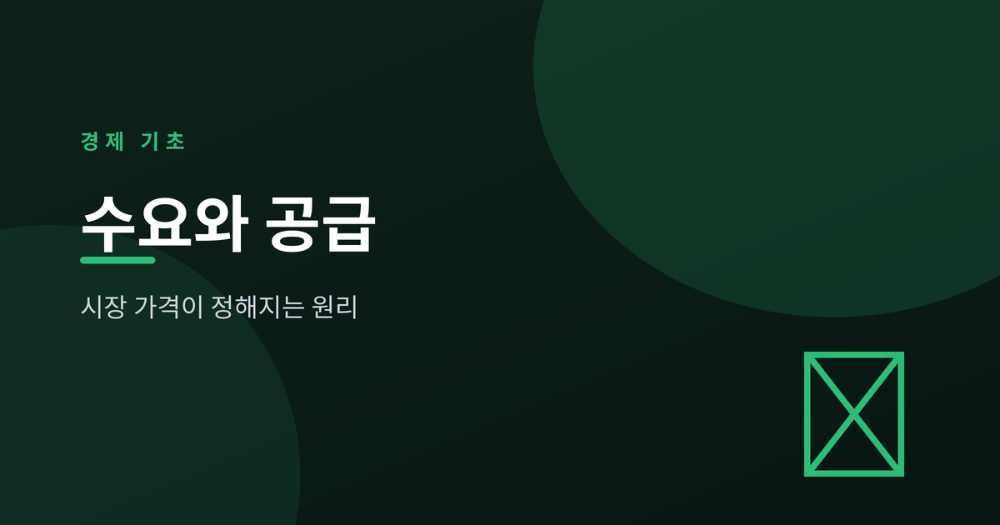
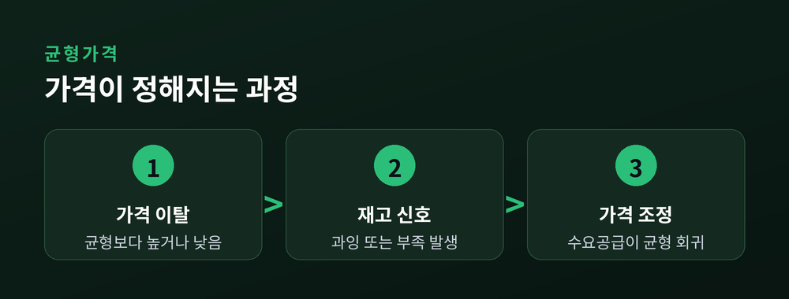
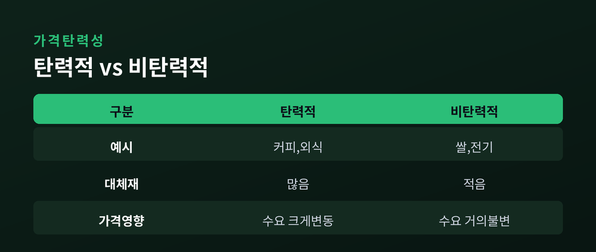
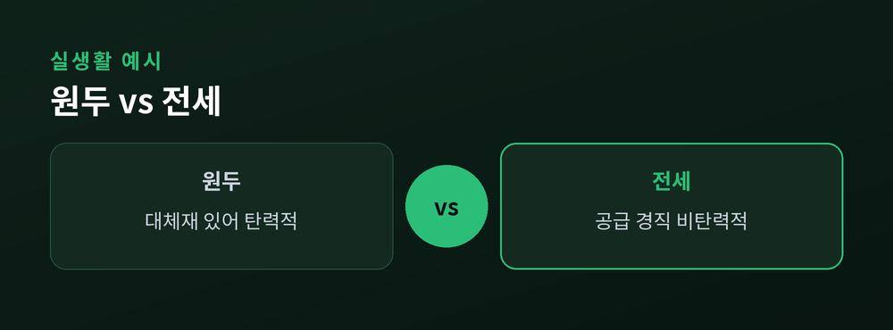

시장 가격은 어떻게 정해지나

시장에서 물건 가격은 누가 정하는 것일까요. 정부도 아니고 판매자 혼자도 아닙니다. 가격은 사고자 하는 힘(수요)과 팔고자 하는 힘(공급)이 만나는 지점에서 저절로 정해집니다. 오늘은 이 원리를 차근차근 살펴보겠습니다.
수요곡선은 가격이 낮을수록 사려는 사람이 많아지는 관계를 보여주며, 오른쪽 아래로 향합니다. 반대로 공급곡선은 가격이 높을수록 팔려는 사람이 많아지는 관계를 나타내며, 오른쪽 위로 향합니다. 두 곡선이 만나는 지점이 바로 시장이 자연스럽게 도달하는 가격입니다.
수요와 공급이 만나는 점을 균형가격이라 부릅니다. 가격이 균형보다 높으면 팔리지 않은 재고가 쌓여 가격이 내려가고, 균형보다 낮으면 사려는 사람이 몰려 가격이 올라갑니다. 이런 조정 과정을 거쳐 시장은 결국 균형점으로 수렴합니다.

가격 외의 요인이 바뀌면 곡선 자체가 이동합니다. 수요는 소득, 선호, 대체재 가격, 인구 변화에 따라 움직이고, 공급은 생산비용, 기술, 원자재 가격, 판매자 수에 따라 움직입니다. 곡선이 이동하면 균형가격과 균형거래량도 함께 바뀝니다.
가격은 결과이지 원인이 아닙니다. 수요와 공급의 변화가 먼저이고, 가격 변화는 그 결과입니다.
가격탄력성은 가격이 변할 때 수요량이나 공급량이 얼마나 민감하게 반응하는지를 나타냅니다. 생필품처럼 대체재가 없는 상품은 가격이 올라도 수요가 크게 줄지 않아 탄력성이 낮고, 기호품처럼 대체재가 많은 상품은 탄력성이 높은 편입니다.


원두 가격이 흉작으로 오르면 커피 전문점은 다른 원두나 대체 음료를 찾기도 하는데, 이는 비교적 탄력적인 반응입니다. 반면 전세 시장은 공급(매물)이 단기간에 늘어나기 어려운 구조라 수요가 조금만 늘어도 가격이 크게 출렁이는 비탄력적인 모습을 보입니다. 같은 원리라도 재화의 특성에 따라 시장 반응은 크게 달라집니다.
수요와 공급은 복잡해 보이지만 결국 "사려는 힘"과 "팔려는 힘"이 만나 가격을 찾아가는 단순한 원리입니다. 이 틀을 알면 뉴스 속 가격 이야기도 한결 쉽게 이해할 수 있습니다.